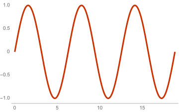
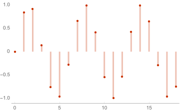

Discrete Time Periodicity
Mar 2020
We say that a function is periodic if, for some p, f(x) = f(x + p)
for all x. This is all pretty familiar. If you've ever taken a
geometry class before, you've probably encountered quite a few trig
functions who are periodic. Here, for example, is our dear friend
sin(x) plotted in continuous time from 0 to 6π.

Both a visual and mathematical examination of this function will
reveal that it is periodic. We learn this pretty early along in our
math careers and a simple google search will tell you that its period
is 2π.
More generally, the condition for this function to be periodic is that
there exists a positive p for which sin(wx) = sin(w(x+p)) = sin(wx + wp). Because we know that the underlying sin function here
is periodic, this requirement holds if wp = 2πk for some k.
In our continuous time case, we know exactly how to solve this
one. Dividing by w, we find the period to be 2πk/w.
What about the discrete time case though? Much to my surprise
recently, it actually turns out that sin(wx) is only periodic under
rather draconian conditions in discrete time. Consider our signal
above, but this time its discretized version.

Things still look fairly periodic, but something isn't quite right. The wave looks like its repeating, but our samples on each hump aren't quite the same. Is our wave still periodic?
Well, lets return to our earlier definition of periodicity. We know
that this wave will be periodic with period p if sin(wn) = sin(w(n+p)) = sin(wn + wp) (I've switched to using n here as our
variable as we're now in discrete time). Working this out, we arrive
at a familiar formula: p = 2πk/w, but in our sin(n) function
w = 1!
Something is different, our period is now an irrational number. In
continuous time this wasn't a problem because we can represent
irrational numbers the same way that we would anything else, but in
discrete time where x can only take on integer values there is no
way to represent an irrational x value. This means that in discrete
time you can only have integer periods.
Another way to think about this is that even if the signal is
periodic, if this period never lands on one of our discrete time
samples, then it is no longer periodic in discrete time. In our
example the sin(wx) is periodic with period 2πk/w in continuous
time but because there is no integer k such that2πk is also an
integer, in discrete time this function is no longer periodic.
I thought this was quite interesting.